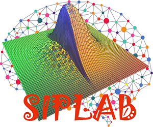
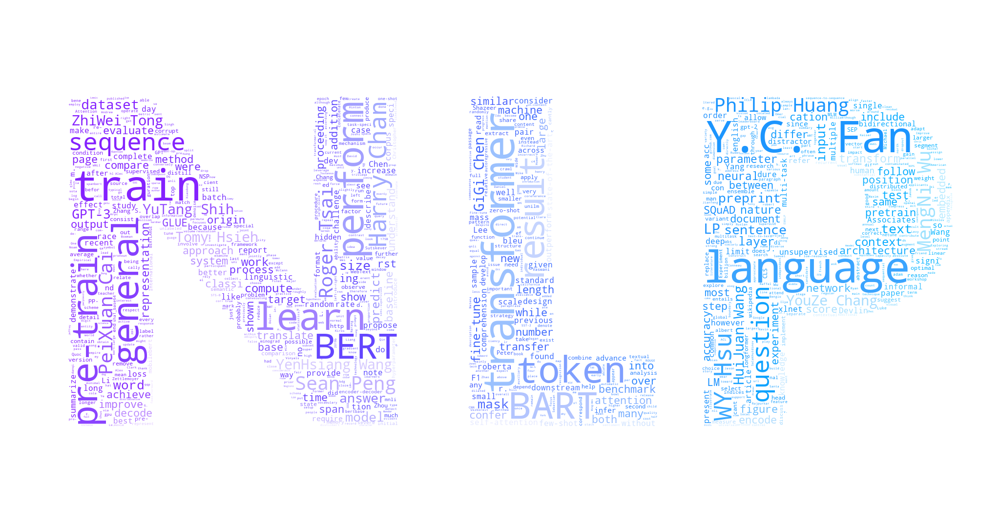

實驗室

訊號與影像處理實驗室
Signal and Image Processing Lab
| 指導教授 | 吳俊霖 |
| 位置 | 應用科技大樓 347 室 |
| 電話 | 04-22840884#347 |
| 網址 | https://drphototw.wixsite.com/wujl/siplab |
| 簡介 | 簡稱「SIP Lab」，本實驗室的研究重點為影像處理、機器學習、機器視覺、多媒體訊號處理、圖訊識別、計算攝影等相關領域。除了相關理論與演算法的研究外，也積極參與相關產學合作計畫，期望能藉由跨領域的合作，對相關產業的技術提升有所貢獻。目前我們主要的研究方向有：一、影像處理與機器視覺，包含影像處理與去模糊技術、相機校正與光學瑕疵檢測應用等；二、機器學習，包含深度學習的理論與應用；三、多媒體訊號處理，包含音訊指紋與視訊處理等；四、圖訊識別，包含統計與類神經網路分類器的設計。五、計算攝影學；六、高維度影像資料分析。 |
電腦視覺暨多媒體實驗室
Computer Vision & Multimedia Lab
| 指導教授 | 黃春融 |
| 位置 | 理學大樓 702C 室 |
| 電話 | 04-22840497#716 |
| 網址 | http://cvml.cs.nchu.edu.tw/ |
| 簡介 | 本實驗室為電腦視覺暨多媒體實驗室，主要進行有關電腦視覺、多媒體訊號處理、影像處理、醫學影像處理與相關應用之研究，並根據上述領域之研究議題進行演算法的開發以及程式的實作。希望讓實驗室同學能夠學習到如何針對問題獨立思考並發展解決問題的方法，再透過視窗程式進行實作，最後學習如何報告所發展的成果與論文撰寫。 目前我們主要的研究方向有： 一、電腦視覺 (Computer Vision) 二、多媒體訊號處理 (Multimedia Signal Processing) 三、影像處理 (Image Processing) 四、醫學影像處理 (Medical Image Processing) 五、視訊監控 (Video Surveillance) |

自然語言處理實驗室
Natural Language Processing Lab
| 指導教授 | 范耀中 |
| 位置 | 理學大樓 721 室 |
| 電話 | 04-22840497#721 |
| 網址 | http://nlp.cs.nchu.edu.tw |
| 簡介 | 本實驗室著眼資料探勘技術領域進行研究；我們以資料工程技術為出發點考慮各式不一樣應用環境中所產生的資料進行該類型資料之查詢處理與探勘。近期研究規劃目標，為利用深度學習技術(Deep Learning)於文字資料探勘與自然語言處理(Text Mining and Natural Language Processing)之研究，目前實驗室研究成員之研究主題著重於機器閱讀理解(Machine Reading Comprehension)與自然語言生成(Natural Language Generation)兩面向。 |